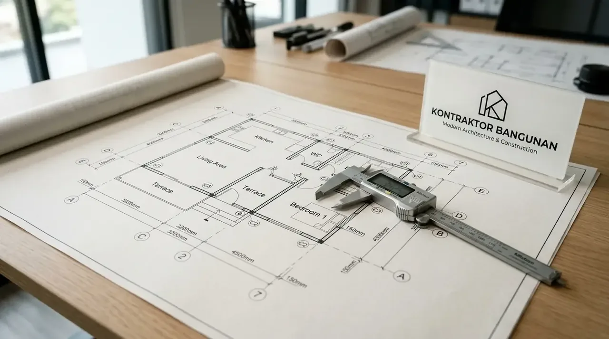

Apa yang Dimaksud dengan Contoh Gambar Kerja Rumah Minimalis?
Definisi contoh gambar kerja rumah minimalis adalah berkas teknis multidimensi yang memuat detail dimensi, material, serta tata letak seluruh komponen bangunan secara terukur.
Dalam industri arsitektur dan konstruksi modern, gambar kerja bukanlah sekadar gambaran visual atau rancangan tiga dimensi (3D) yang bernilai estetis semata. Gambar kerja adalah kumpulan dokumen cetak biru (blueprint) dua dimensi yang disusun menggunakan skala presisi (seperti 1:50 atau 1:100) serta standar simbol internasional. Di dalamnya tertera seluruh informasi fungsional yang dibutuhkan oleh tim pelaksana, mulai dari ketebalan dinding, elevasi lantai, kedalaman galian fondasi, hingga spesifikasi jenis penutup atap yang akan diaplikasikan.
Kerangka dokumen ini dibagi menjadi beberapa bagian utama: Gambar Arsitektur (fokus pada estetika, denah, tampak, dan potongan), Gambar Struktur (fokus pada daya dukung beban, cakar ayam, sloof, dan kolom), serta Gambar Mekanikal, Elektrikal, dan Plumbing (MEP). Keterpaduan ketiga sektor ini memastikan bahwa rumah minimalis tidak hanya tampak indah di luar, tetapi juga aman secara struktural dan nyaman secara fungsi harian.
Berdasarkan Laporan Statistik Efisiensi Proyek Konstruksi Nasional 2025 dari Lembaga Pengembang Jasa Konstruksi (LPJK), penggunaan gambar kerja yang tidak lengkap berkontribusi terhadap 42% kasus pembengkakan anggaran (overbudget) akibat pengerjaan ulang (rework) di lokasi proyek. Selain itu, data dari Survei Tata Ruang & Perizinan Bangunan 2026 mencatat bahwa lebih dari 60% penolakan berkas perizinan awal terjadi akibat ketidaksesuaian gambar teknis dengan regulasi KDB (Koefisien Dasar Bangunan). Bersama Kontraktor Bangunan, seluruh rancangan dokumen dibuat memenuhi standar regulasi terupdate sehingga memitigasi seluruh risiko teknis tersebut.
- Lembar Arsitektural: Site plan, denah tata ruang, tampak muka/samping, potongan melintang/membujur, dan denah pola lantai.
- Lembar Struktural: Denah titik fondasi, detail sloof, kolom praktis, balok ring, dan rangka kap atap.
- Lembar Utilitas (MEP): Diagram instalasi daya listrik, jalur pemipaan air bersih, air kotor, serta bak kontrol septic tank.
Mengapa Denah Rumah Minimalis 1 Lantai Menjadi Dasar Utama Cetak Biru?
Penyusunan denah rumah minimalis 1 lantai menjadi dasar cetak biru karena mengatur sirkulasi antarruang, efisiensi pencahayaan alami, serta alokasi tata letak beban.
Denah adalah potongan horizontal bangunan yang diambil dari ketinggian tertentu (umumnya +1,00 meter dari peil lantai) untuk memperlihatkan pembagian ruang secara transparan. Pada rumah minimalis 1 lantai, efisiensi tata ruang menjadi aspek kunci karena tidak ada opsi pemisahan lantai untuk area publik dan privat. Melalui denah yang terencana, arsitek dapat menentukan alur sirkulasi udara (cross ventilation), memaksimalkan penataan bukaan cahaya matahari, serta meminimalkan area koridor yang terbuang (dead space).
Lebih jauh lagi, denah berfungsi sebagai acuan utama dalam menentukan modul struktur di bawahnya. Letak dinding gantung, posisi kolom praktis, dan bukaan pintu/jendela pada denah akan langsung memengaruhi pemetaan titik fondasi serta distribusi beban atap. Kerumitan penataan ini menuntut perhitungan arsitektural yang cermat agar pemanfaatan luasan lahan dapat dioptimalkan tanpa mengorbankan kenyamanan penghuni.
Akurasi gambar denah juga sangat membantu para pengembang dan pemilik bisnis dalam memperhitungkan kebutuhan material secara mendasar. Dengan mengetahui luas bersih ruangan (m²) dan keliling dinding (m'), estimasi kebutuhan lantai, plesteran, hingga kebutuhan cat dapat dikalkulasikan secara transparan. Jika Anda ingin memastikan efisiensi denah ruang proyek Anda, manfaatkan fasilitas Konsultasi Desain & RAB Gratis dari Kontraktor Bangunan untuk berdiskusi langsung dengan tim arsitek senior kami.

Lembar teknis gambar kerja siap PBG/IMB mencakup detail pembesian sloof, kolom praktis, serta skema elevasi arsitektur terukur.
Apa Saja Syarat Dokumen Gambar Kerja Siap IMB atau PBG?
Standar dokumen gambar kerja siap IMB atau PBG mensyaratkan lembar denah, tampak empat sisi, potongan melintang/membujur, peta situasi, serta tata letak utilitas.
Proses legalitas bangunan gedung saat ini mewajibkan pemenuhan dokumen teknis yang memenuhi kriteria Persetujuan Bangunan Gedung (PBG)—dahulu dikenal sebagai Izin Mendirikan Bangunan (IMB). Tim verifikator dari dinas teknis pemerintah daerah membutuhkan bukti konkret bahwa bangunan yang akan didirikan mematuhi Peraturan Daerah tentang garis sempadan bangunan (GSB), KDB, KLB (Koefisien Lantai Bangunan), serta standar keselamatan jiwa dan kelayakan lingkungan.
Berikut adalah tabel komparasi kelengkapan dokumen teknis antara gambar sketsa standar dan gambar kerja profesional berstandar PBG:
| Kelengkapan Parameter | Gambar Sketsa / Konseptual | Gambar Kerja Siap IMB / PBG (Kontraktor Bangunan) |
|---|---|---|
| Peta Situasi & Rencana Tapak (Site Plan) | Hanya ilustrasi denah kasar | Lengkap dengan koordinat, GSB, RTH, dan KDB |
| Gambar Arsitektur (Tampak & Potongan) | Gambar 3D visual tanpa dimensi | Tampak 4 Sisi, Potongan Melintang & Membujur (Skala 1:100) |
| Gambar Detail Struktur & Pembalokan | Tidak Tersedia | Detail Cakar Ayam, Sloof, Kolom, Balok, & Pembesian |
| Diagram Mekanikal & Elektrikal (MEP) | Hanya posisi titik lampu | Single Line Diagram Listrik, Skematik Air Bersih & Kotor |
| Detail Sanitasi & Septic Tank | Tidak Ada | Detail Sumur Resapan, Drainase, & Bio-Septic Tank |
| Legalitas Sertifikasi Ahli (STRA) | Tanpa Sertifikasi Ahli | Ditandatangani Arsitek & Insinyur Tersertifikasi Resmi |
Penyusunan berkas gambar kerja siap IMB yang presisi mengeliminasi proses revisi yang memakan waktu lama pada sistem perizinan instansi. Dengan menyerahkan seluruh tahapan desain dan perizinan kepada Kontraktor Bangunan, Anda mengamankan waktu operasional bisnis sekaligus memastikan proyek berjalan sesuai tenggat jadwal yang direncanakan.
Bagaimana Hubungan Gambar Kerja dengan Ketepatan Estimasi RAB?
Hubungan gambar kerja dengan ketepatan estimasi RAB sangat erat karena seluruh perhitungan volume pekerjaan diekstrak langsung dari dimensi spesifik dokumen tersebut.
Rencana Anggaran Biaya (RAB) dibuat melalui metode Quantity Surveying, yaitu mengalikan volume setiap item pengerjaan dengan harga satuan bahan dan upah (Analisa Harga Satuan Pekerjaan / AHSP). Jika gambar kerja yang dijadikan acuan tidak mendetail atau memiliki perbedaan ukuran antar-lembar kerja, maka perhitungan volume akan menjadi spekulatif. Hal ini kerap memicu masalah di pertengahan proyek, seperti kekurangan pasokan semen, kekurangan besi beton, atau bahkan kelebihan pembelian material yang meningkatkan biaya operasional.
Sebagai contoh, pada detail gambar kerja struktur, dimensi kolom praktis tertulis 15 × 15 cm dengan besi utama 4φ10 mm dan begel φ6-150 mm. Dari informasi detail ini, kalkulator anggaran dapat menghitung panjang total besi beton yang dibutuhkan secara presisi hingga satuan batang. Sebaliknya, tanpa adanya detail gambar kerja tersebut, estimasi biaya hanya menggunakan rumus taksiran kasar (m²) yang memiliki tingkat marjin kesalahan (error margin) mencapai 15% hingga 25%.
Keterbukaan data volume pekerjaan yang diturunkan dari gambar kerja presisi memberikan rasa aman penuh bagi para pemilik aset B2B dan individu. Melalui pengawasan mutu terintegrasi, Kontraktor Bangunan memastikan bahwa setiap rupiah yang Anda alokasikan dalam RAB memiliki acuan teknis yang jelas di dalam berkas gambar kerja.
Mengapa Memilih Kontraktor Bangunan untuk Jasa Desain dan Konsultasi Arsitek?
Memilih Kontraktor bangunan memberikan jaminan hasil cetak biru yang presisi, integrasi RAB transparan, kelancaran legalitas perizinan, dan siap dieksekusi di lapangan.
Kami mengombinasikan kreativitas arsitektural dengan keahlian teknik sipil untuk menghasilkan rancangan bangunan yang estetis, fungsional, dan efisien secara anggaran. Tim arsitek dan spesialis struktur kami dibekali dengan lisensi resmi dan pemahaman mendalam mengenai standar regulasi bangunan terkini. Hal ini memastikan bahwa dokumen contoh gambar kerja rumah minimalis yang kami hasilkan dapat langsung diterapkan di lokasi proyek tanpa ada hambatan komunikasi dengan tukang pelaksana.
Selain layanan perancangan dokumen teknis, Kontraktor Bangunan menyediakan pendampingan penuh dari fase ideasi konseptual, analisis kelayakan lahan, pengurusan PBG, hingga perhitungan RAB terperinci. Pendekatan terpadu ini menghindarkan Anda dari kerumitan mengoordinasikan secara terpisah antara jasa arsitek, engineer struktur, dan pelaksana konstruksi.
Segera ambil langkah cerdas untuk mewujudkan aset properti idaman atau fasilitas bisnis Anda bersama mitra yang tepercaya. Tim spesialis kami siap membantu memformulasikan konsep ruangan dan perhitungan biaya yang paling efisien untuk proyek Anda. Klik tombol Konsultasi Desain & RAB Gratis sekarang juga untuk memulai diskusi bersama tim Kontraktor bangunan.
Pertanyaan yang Sering Diajukan (FAQ)
Kesimpulan Praktis
Keputusan untuk menyusun dokumen contoh gambar kerja rumah minimalis yang presisi adalah fondasi terpenting sebelum memulai aktivitas pembangunan fisik di lapangan. Cetak biru yang komprehensif tidak hanya berfungsi sebagai peta panduan bagi pelaksana konstruksi, tetapi juga menjadi instrumen hukum dalam perizinan PBG serta acuan utama dalam mengontrol efisiensi alokasi RAB. Dengan menghindari pengerjaan tanpa perencanaan teknis, Anda melindungi investasi properti dari risiko pengerjaan ulang dan pembengkakan biaya yang tidak perlu.
Pastikan perencanaan aset hunian maupun bangunan komersial Anda ditangani oleh praktisi arsitektur dan konstruksi yang berdedikasi tinggi. Dapatkan kepastian desain yang estetis, struktur yang kokoh, dan kalkulasi biaya yang efisien dalam satu paket layanan profesional. Segera ambil tindakan strategis hari ini dengan melakukan Konsultasi Desain & RAB Gratis bersama tim ahli dari Kontraktor Bangunan.